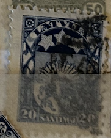
| SOURCE | TITLE| IMAGE MATCH | click to source page |
| Stamp Community Forum | Latvian Stamps With Interesting Reverse Sides - Stamp Community Forum | 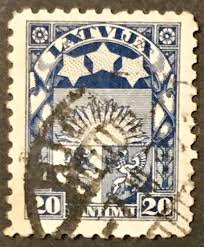 |
| eBay | LATVIA 121 (Mi95) - National Coat of Arms "1923 Blue" (pb39426) | eBay | 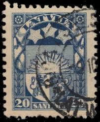 |
| eBay | LATVIA 1921-1922 Rising Sun 10 R (FBX) | eBay | 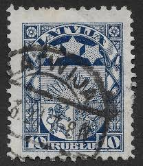 |
| Dreamstime.com | Latvia on postage stamps editorial image. Image of collector - 143059225 | 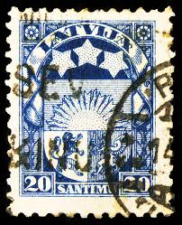 |
| Shutterstock | 5+ Thousand Coat Of Arms Moscow Royalty-Free Images, Stock Photos & Pictures | Shutterstock | 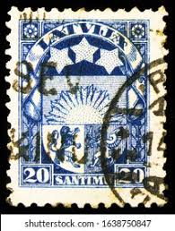 |
| PicClick UK | LATVIA RISING Sun Issue. Good Used. 10 Stamps. (p328) £2.77 - PicClick UK | 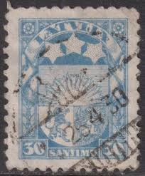 |
| Federal University of Agriculture, Abeokuta (FUNAAB) | LATVIA STAMPS | 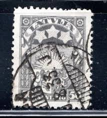 |
| eBay | Latvija Foreign 25c Blue Stamp Used - #A996 | eBay | 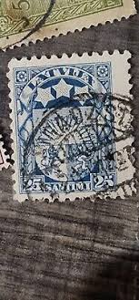 |
| Shutterstock | Latvia-circa 1926a Stamp Printed Latviashows Coat Stock Photo 1272981427 | Shutterstock | 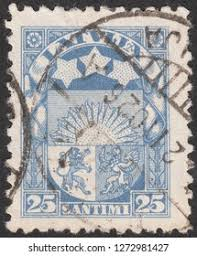 |
| iStock | Very Old Austrian Posgtage Stamp Stock Photo - Download Image Now - Austria, Eagle - Bird, Flag - iStock | 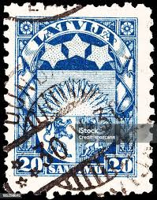 |
| Colnect | Stamp: Latvian Coat of Arms (Latvia(Definitive Issue - Coats of Arms (New Currency - 1927)) Mi:LV 175,Sn:LV 149,Yt:LV 176,Sg:LV 141,AFA:LV 135 📮 | 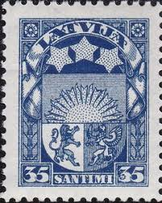 |
| Colnect | Stamp: Latvian Coat of Arms (Latvia(Definitive Issue - Coats of Arms (New Currency - 1923)) Mi:LV 105,Sn:LV 122,Yt:LV 102,Sg:LV 108,AFA:LV 101 📮 | 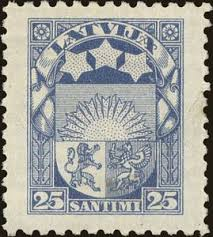 |
| Bonjour les amis je partage avec vous ma collection Ottoman | 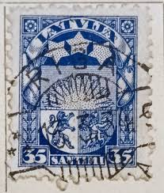 | |
| HipStamp | Latvia 1923-25 used Sc 121 20s Coat of Arms, stars Variety | Europe - Latvia, General Issue Stamp / HipStamp | 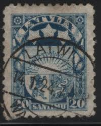 |
| Shutterstock | United Kingdom Circa 1918 Stamp Printed Stock Photo 55859446 | Shutterstock | 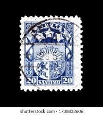 |
| eBay | Latvia Stamps- 1927-1933 Rising Sun 7 S (FBX) | eBay | 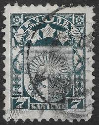 |
| Alamy | Cancelled postage stamp printed by Latvia, that shows Coat of arms Stock Photo - Alamy | 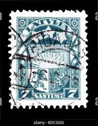 |
| eBay | LATVIA 122 (Mi105) - National Coat of Arms "1925 Light Ultramarine" (pf5939) | eBay | 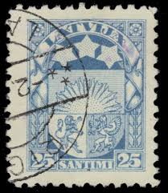 |
| eBay | Latvia 🇱🇻 1931 SC 108 used cover cut . g1898 | eBay | 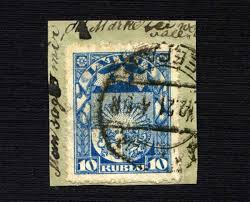 |
| TouchStamps | Stamp: Liberian Star (Liberia 1923) - TouchStamps | 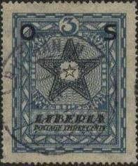 |
| eBay | LETTONIE LATVIJA, timbre CLASSIQUE n° 88, ARMOIRIES, neuf*, VF MH STAMP | eBay | 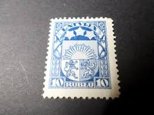 |
| eBay | Paraguay - 1913 - ' National Coat of Arms ' 75c (KBX) | eBay | 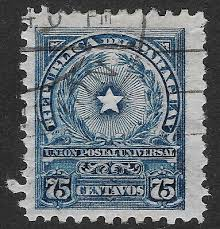 |
| eBay | Used Postage Latvian Stamps for sale | eBay | 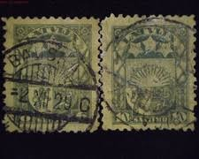 |
| Blogger.com | Big Blue 1840-1940: Latvia | 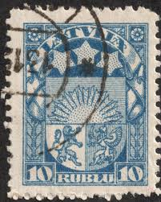 |
| eBay | ERROR:Inverted+Normal Wmk) 1927, Latvia, 35s, Solovyov #111 / Mi #175 | eBay | 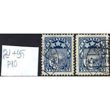 |
| eBay | Blue Latvian Stamps for sale | eBay | 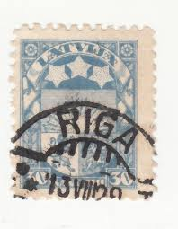 |
| eBay | 1 Cent Blue Used US Stamps (19th Century) for sale | eBay | 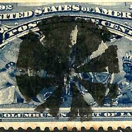 |
| EFEO | Agenda EFEO | 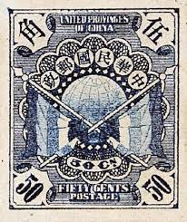 |
| eBay | Latvia Sc#121,#118 Riga 15/8/23 Illustrated "SHIP" Advertising to US | eBay | 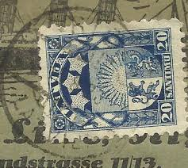 |
| Stamp Community Forum | 2) Helvetia Switzerland Stamps I Cannot Identify? - Stamp Community Forum | 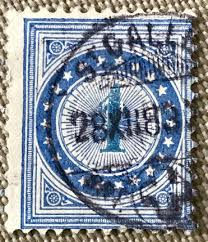 |
| JF-Stamps | Paraguay | JF Stamps Danmark | 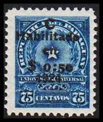 |
| HipStamp | Search "Paraguay 1924" in Topicals / HipStamp | 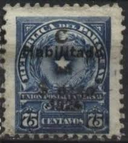 |
| eBay | LIBERIA O143 - Liberian Star "Official Postage" (pb26000) | eBay | 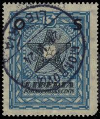 |
| platinumhf.ca | Vintage Postage Stamps Latvia 10 Different Stamps Collection - Vintage Stamps Until 1940 For Collectors Latvia 10 Different Vintage Stamps Until 1940 For Collectors | 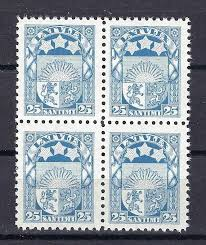 |
| impresoya.com | Canadian Stamps Mahaphilla Birds 50 Different Stamps CTO For Stamp Collection 50 Different Philippines Stamps Collection | 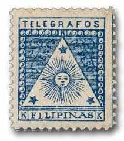 |
| USPhila.com | Values of US Stamps Scott Catalog 206 - 1c 1882 Franklin | 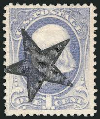 |
| JF-Stamps | 1870 - Stamps | JF Stamps Danmark | 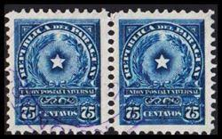 |
| HipStamp | Paraguay Scott 215 | Central & South America - Paraguay, General Issue Stamp / HipStamp | 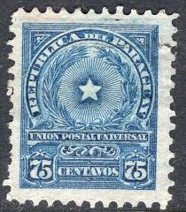 |
| eBay | BOLIVIA 26 USED NO FAULTS VERY FINE! UHG | eBay | 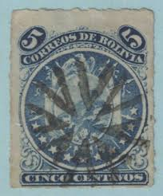 |
| Northwind Stamps | Products – Page 199 – Northwind Stamps | 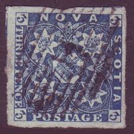 |
| DealBid | Recently Listed Listings in Stamps > Latin America - 10 items per page - Recently Listed | DealBid | 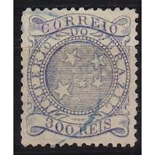 |
| Stamp Auction Network | Schuyler J. Rumsey Philatelic Auctions Sale - 47 Page 29 | 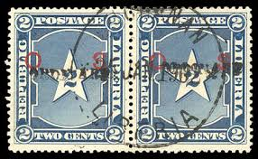 |
| eBay | Flags, National Emblems Bolivian Stamps for sale | eBay | 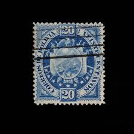 |
| auctionomy.com | 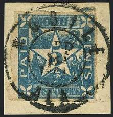 | |
| All Nations Stamp and Coin | Newfoundland#15P-23P VF 1929 1d-1/- Blue Perkins Bacon Reprint Proof Set | All Nations Stamp and Coin | 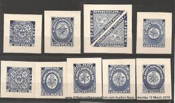 |
| lastdodo.com | Stamps from Liberia Stamp catalogue - LastDodo | 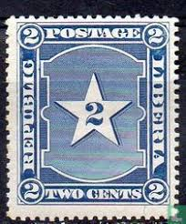 |
| eBay | Paraguay Stamp, 1927, sc#267, Mint, VLH, OG | eBay | 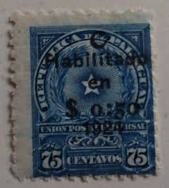 |
| eBay | BOLIVIA 44 (Mi42i) - National Coat of Arms "Thin London Print" (pa71175) | eBay | 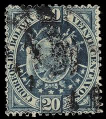 |
| eBay | Blue Used Latvian Stamps for sale | eBay | 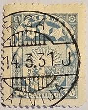 |
| Todocolección | sello antiguo paraguay 5 centavos - Buy Antique stamps of Paraguay on todocoleccion | |
| Alamy | Letter stamp hi-res stock photography and images - Alamy | |
| Jace Stamps | Switzerland Back of Book | |
| eBay | Cultures, Ethnicities Peruvian Stamps for sale | eBay | |
| Etsy | Texas Statehood Centenary | 1945 | Vintage US Postage Stamps | Face Value 3 Cents | Scott 938 | Austin, Houston, San Antonio, Dallas, Alamo - Etsy | |
| Wikipedia | File:United Provinces of China stamp (1912).png - Wikipedia | |
| Wikipedia | Estrella radiada de 5 céntimos - Wikipedia, la enciclopedia libre | |
| eBay | Bolivia stamp 25 used | eBay | |
| WorthPoint | 1 rare Philippines stamps Aguinaldo revolutionary stamp KKK TELEGRAFOS MLH | #543203925 | |
| What do these symbols stamped on top of the actual stamps mean? : r/askStampCollectors | ||
| eBay | PARAGUAY #142 1908 5c OFFICIAL MAIL OVERPRINTED F-VF USED | eBay |
.png){kind=link}